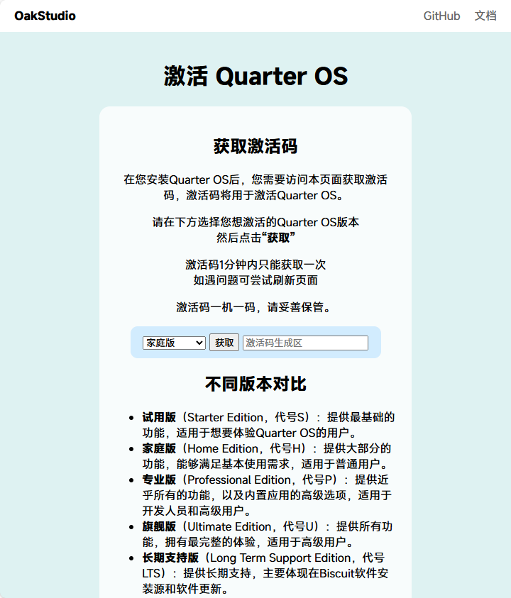

在您第一次启动 Quarter OS，进入OOBE的时候，会提示您激活Quarter OS。
虽然您可以在OOBE输入pass跳过激活，但未激活的情况下会有广告，并也将影响到部分功能和您的使用体验。
您可以在Quarter OS官网的 获取激活码页面 获取激活码。

试用版（Starter Edition，代号S）：提供最基础的功能，适用于想要体验Quarter OS的用户。
家庭版（Home Edition，代号H）：提供大部分的功能，能够满足基本使用需求，适用于普通用户。
专业版（Professional Edition，代号P）：提供近乎所有的功能，以及内置应用的高级选项，适用于开发人员和高级用户。
旗舰版（Ultimate Edition，代号U）：提供所有功能，拥有最完整的体验，适用于高级用户。
长期支持版（Long Term Support Edition，代号LTS）：提供长期支持，主要体现在Biscuit软件安装源和软件更新。
在OOBE中，直接输入激活码并回车，即可完成激活。
若是在终端下，只需要输入 activate -a [激活码] 命令，回车即可完成激活。
在KomShell中，输入 activate -ck 命令，即可查看当前激活状态。
激活Quarter OS后，您将拥有以下功能：
Written by ElofHew
© 2025 Oak Studio. All rights reserved.